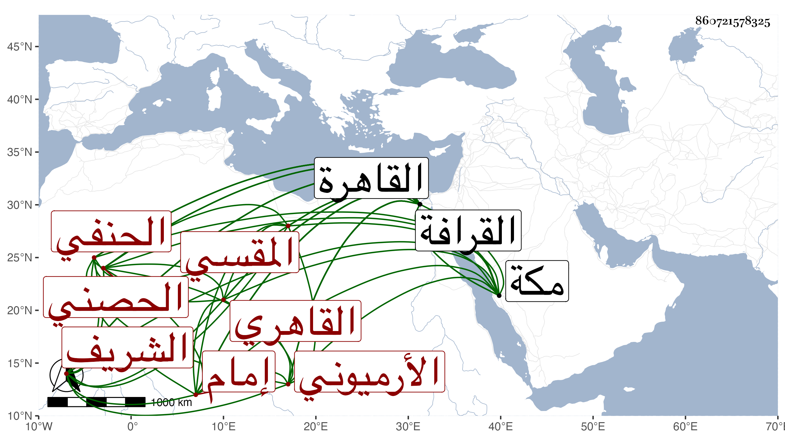

0902Sakhawi.DawLamic.ITO20230111-ara1.EIS1600.860721578325
Biography ID: 860721578325
564
محمد بن علي بن محمد الشمس أبو الوفاء بن النور الحصني الأرميوني القاهري المقسي الحنفي الشريف إمام القجماسية . ولد تقريبا سنة ثلاث وأربعين وثمانمائة بالقاهرة ونشأ بها فحفظ القرآن والشاطبيتين والمجمع والمنار والعمدة للنسفي وألفيتي الحديث والنحو والتلخيص والشمسية والتهذيب للتفتازاني كلاهما في المنطق وعرض على جماعة كابن الديري وابن الهمام والمناوي وأخذ القراآت عن الشهابين الشارمساحي والسكندري والشمس بن العطار والزين ماهر وأبي القسم النويري وابن كزلبغا فعلى الأول للعشر وعلى الثالث للسبع بعض ختم وعلى الثاني لنافع وابن كثير وغيرهما وعلى الأخير لنافع وابن كثير وأبي عمرو ثم للسبع إلى أثناء الحجر كلهم بالقاهرة وعن السيد الطباطبي للعشر بمكة ثم بعضه بجامع ابن الرفعة والفقه عن أبي العباس السريسي والزين قاسم بل والقاضي سعد الدين بن الديري وأكثر عنه والأصول عن أولهم وأصول الدين عن ابن الهمام والعربية عن الشرف موسى البرمكيني والجلال المرجوشي وألفية الحديث وغيرها بحثا عن كاتبه في آخرين ممن حضر دروسهم كالأقصرائي والكافياجي وبرع في الفضائل وناب في القضاء عن ابن الديري فمن بعده وناكده المحب بن الشحنة لمزيد اختصاصه بابن الصواف وما نهض لترك استنابته ثم اقتفى أثره الأمشاطي بعد أن ولاه إلى أن أخلص هو في الترك ، وحج غير مرة قبل ذلك وبعده وجاور وصحب عبد المعطي المغربي وعظم اختصاصه به وأخذ عنه التصوف وغيره واستقر في تدريس الأينالية بالشارع والإعادة بالمهمندارية مع نيابة نظرها برغبة البرهان الكركي له عنها وفي التدريس بالفخرية ابن أبي الفرج وبمسجد خان الخليلي بعد الشمس الأمشاطي وفي الإمامة بالقصر ومرتب بالجوالي الطرابلسية بعد التاج عبد الوهاب الشامي وفي تدريس القجماسية المستجدة وإمامتها وخزن كتبها فالتدريس بعد قاضي الحنفية ابن المغربي والإمامة والخزن بعد الشمس النوبي . وتصدى للإقراء في الفقه وأصوله والعربية والمعاني والبيان وغيرها كالقراآت بل وكتب على المجمع كتابة جامعة وصلى فيها إلى صلاة العيد فأكثر ، ورزقه الله ملكة قوية في التعبير عن مراده مع مزيد حافظة وحسن تصور واستحضار لمحافيظه واعتناء بزيارة الشافعي في كل جمعة وكونه يمشي لذلك من باب القرافة أدبا وكثرة خضوعه للمنسوبين للصلاح وتراميه عليهم بل عنده من التواضع والأدب والمداراة والتودد بالتردد لمن يألفه أو يترجى نفعه وألفاظ بليغة ومعان جيدة يستعملها في مخاطباتهم لو كانت عن روية لحمدت مع بعد تام عن دناءة النفس ومزيد رغبة في إظهار النعمة في ملبسه ونحوه وحشمة وافرة وموافاة تامة .
